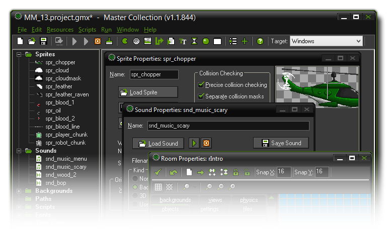

Introduction
An introduction to GameMaker:Studio.
We all know that playing computer games is fun. But what many people don't realise is that it is actually more fun to design your own computer games and let other people play them!
Now, making computer games is not normally a simple thing and the commercial games you buy nowadays typically take two or three years of development with teams of anywhere between
10 and 50 people and budgets that can easily reach millions of dollars. Not to mention the fact that all these people are highly experienced: programmers, art designers, sound technicians, etc.
But that's changed with the advent of GameMaker:Studio. With GameMaker:Studio you can start to prototype and create your own computer games quickly and easily without the absolute need
to learn a programming language.
GameMaker:Studio offers an intuitive and easy to use Drag-and-Drop (referred to as 'DnD' from now on) interface of action icons that allow you to start on creating your own games very quickly.
You can import and create images and sounds to use in objects, and then instantly see the results of your actions at the press of a button. Obviously, you want to get started as quickly as possible, so
GameMaker:Studio is bundled with a considerable collection of sprites, backgrounds and sounds which you can import and use to get straight to work. These sprites are designed as "place holders"
to get you going but they are not for use in any finished product. It should be noted here that GameMaker:Studio focuses on two-dimensional games, (which isn't to say that it's not capable
of 3D, as it is!) and many great games use 2D sprite technology, even though they look very 3D when playing.

As mentioned previously, you need to assign images (sprites) and other things to objects, which are easily defined in your game through the DnD action icons to give them properties and behaviour, after which you
place them in rooms along with backgrounds and other things to give your game the look and feel you want. It's in these rooms that the game takes place, and they can be considered essentially as "levels" to
your game. If you master the DnD interface and how it works to control basic things in objects, you can then move on to the easy to learn programming language GML which gives you much more control over
every aspect of GameMaker:Studio.
This help file will tell you the most important things you need to know about GameMaker:Studio and how you can create your own games with it. Please realize that, even with a program like GameMaker:Studio,
designing computer games is not completely effortless - so no "make me an MMORPG" button here! Be aware too that there are many aspects to making games that are all equally important: game-play, graphics, sounds,
user interaction, etc... but, the most important aspect of all, is patience. While GameMaker:Studio is a powerful tool, it cannot do everything for you at the touch of a button so start small with simple
examples and you will realize that not only is creating games great fun, but that learning to use GameMaker:Studio to do it is also very rewarding!
For more information, examples, tutorials, ideas and links to helpful forums and other great sites, check out the website
Soon you will become a master GameMaker yourself. Enjoy the experience!